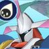

- 세대
- 궁극체
- 종족
 백신
백신- 속성
 빛
빛- 소비 메모리
- 20
- 장비 슬롯
- 2
스테이터스 (Lv.99)
HP217032위/98
SP20819위/98
ATK16776위/98
INT22822위/98
DEF13896위/98
SPD23215위/98
막대 길이는 등록된 디지몬 중 최고값 대비 비율이에요. 순위는 스테이터스가 등록된 디지몬끼리 비교해요.
필살기 1
오로라 언듈레이션 빛 SP 20
적 전체마법위력 80
디지몬 속성과 같음
적 전체에 빛속성 위력 80의 마법공격. 필중. 자신에게 불리한 상태이상 효과를 해제한다.
SS(서포트스킬)
퍼지 사인
불리한 종족으로부터 공격을 받았을 때 대미지의 10%를 경감하고 SP로 변환한다.
계승기 (레벨업 습득) 5
이 디지몬이 레벨업으로 배우는 스킬이에요. 배운 스킬은 진화·퇴화해도 계속 쓸 수 있어요.
| 습득 Lv | 스킬 | 속성 | SP |
|---|---|---|---|
| 20 | 홀리 라이트 III 적 1체에 빛속성 위력 95의 마법공격. 명중률 95%. | 9 | |
| 35 | 세이프티 가드 아군 1체가 전투불능에 빠질 공격을 받았을 때 1회 견딜 수 있게 한다. | 32 | |
| 50 | 파이널 오라 배틀멤버 전체의 HP를 크게 회복한다. | 40 | |
| 65 | 샤인 레이저 III 적 전체에 빛속성 위력 65의 마법공격. 명중률 95%. | 10 | |
| 80 | 퍼펙트 리바이브 배틀 멤버 전체를 전투불능으로부터 부활시키고 HP를 크게 회복한다. | 60 |
이 디지몬이 강한 상대
상대 종족(세로)과 속성(가로)별로 이 디지몬의 공격 필살기 중 가장 높은 배율이에요. 칸에 마우스를 올리면 계산 근거가 보여요.
×3 이상×2 이상보통×1 미만
| 상대 ↓ / → | |||||||||
|---|---|---|---|---|---|---|---|---|---|
| 백신 | ×1.00 | ×1.00 | ×1.00 | ×1.00 | ×1.00 | ×1.00 | ×1.00 | ×1.50 | ×1.00 |
| 데이터 | ×0.50 | ×0.50 | ×0.50 | ×0.50 | ×0.50 | ×0.50 | ×0.50 | ×0.75 | ×0.50 |
| 바이러스 | ×2.00 | ×2.00 | ×2.00 | ×2.00 | ×2.00 | ×2.00 | ×2.00 | ×3.00 | ×2.00 |
| 프리 | ×1.00 | ×1.00 | ×1.00 | ×1.00 | ×1.00 | ×1.00 | ×1.00 | ×1.50 | ×1.00 |
등록된 디지몬 중 ×2 이상으로 공격할 수 있는 상대 114마리
궁극체 같은 세대 37 · 다른 세대 상대는 도감에서 볼 수 있어요.
그랜드라크몬×3.00로드나이트몬×3.00로드나이트몬NX×3.00리리스몬×3.00마왕몬×3.00발바몬×3.00베놈묘티스몬×3.00베르제브몬×3.00베르제브몬BM×3.00벨페몬SM×3.00알카디몬 궁극체×3.00카오스듀크몬×3.00켈비몬(악)×3.00피에몬×3.00가이오몬×2.00그랜쿠가몬×2.00다크드라몬×2.00듀크몬×2.00듀크몬NX×2.00러스트티라노몬×2.00리바이어몬×2.00메기드라몬×2.00메르크리몬×2.00메탈가루몬(흑)×2.00메탈에테몬×2.00미네르바몬×2.00브레이크드라몬×2.00블랙워그레이몬×2.00이바몬×2.00카오스드라몬×2.00킹에테몬×2.00타이거베스파몬×2.00타이런트캅테리몬×2.00타이타몬×2.00파워드라몬×2.00플래티넘워매몬×2.00피노키몬×2.00
진화 전 디지몬 (퇴화 가능) 3
진화 가능 디지몬 1

카오스몬VA
- 레벨 60 이상
- 공격력이 155 필요
- 지력이 100 필요
- 재능이 40 필요
- 우정이 100% 필요
- 우정 100%의 반쵸레오몬이 동료에 있다
진화 트리 · 발두르몬까지 오는 길 + 다음 진화
왼쪽부터 진화 순서예요. 발두르몬 오른쪽(점선 칸)은 바로 다음 진화 1단계예요. 그 뒤가 궁금하면 그 디지몬을 눌러 따라가 보세요. 선은 출발하는 디지몬의 색을 따라가요. 디지몬을 한 번 누르면 거기서 발두르몬까지 가는 경로만 남고, 한 번 더 누르면 그 디지몬 페이지로 이동해요. 회색 칸은 아직 정보가 없는 디지몬이에요.
🧭 도감에서 발두르몬 진화 루트 찾기